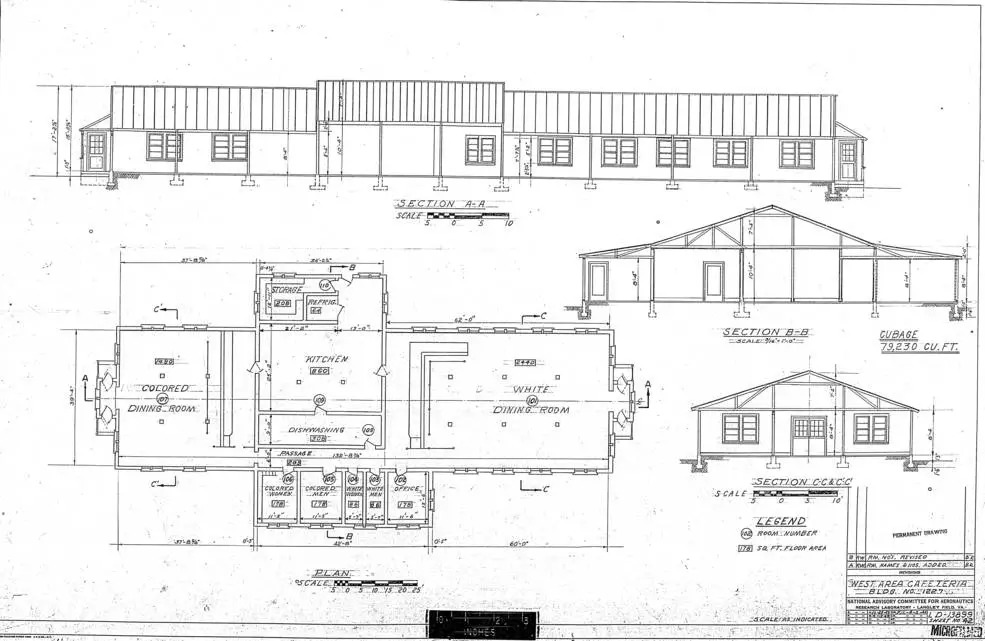

UT Dallas' Arts and Humanities Distinguished University Chair, Anne Balsamo, describes the entanglement as something that has occurred decades in the past, yet persists even today (Balsamo 10.1). Technology and culture are closely intertwined, constantly shaping and reshaping each other.
Since Hidden Figures takes place in the early 1960s, racism, sexism, and misogyny were literal pillars of America's culture. And that culture did not stay outside NASA's doors, it was built into the walls.

Segregation was not just policy, it was architecture.
When Al Harrison demands to know where Katherine Johnson goes multiple times a day, her answer stops him cold:
Harrison is visibly struck by the reality Johnson has been silently absorbing. Rather than filing a complaint or having her fired, Harrison grabs a crowbar. He uses it to tear down the sign for the colored bathroom, and in doing so, he changes the culture of NASA forever.
Culture was forced to shift because technical necessity demanded it. The physical layout of NASA's campus was itself a cultural artifact. A building designed to serve a mission of human progress while enforcing racial segregation down to its plumbing.
Johnson's math paired with the racism she was experiencing cannot be separated. In fact, they were the same experience.
Mary Jackson encountered the same entanglement from a different angle. Segregation laws prevented her from attending the engineering classes at an all-white high school she needed to advance at NASA. The cultural system and the technical path forward were in direct collision, and the culture was built to win.
Next: Hidden Figures →Page 3 of 8